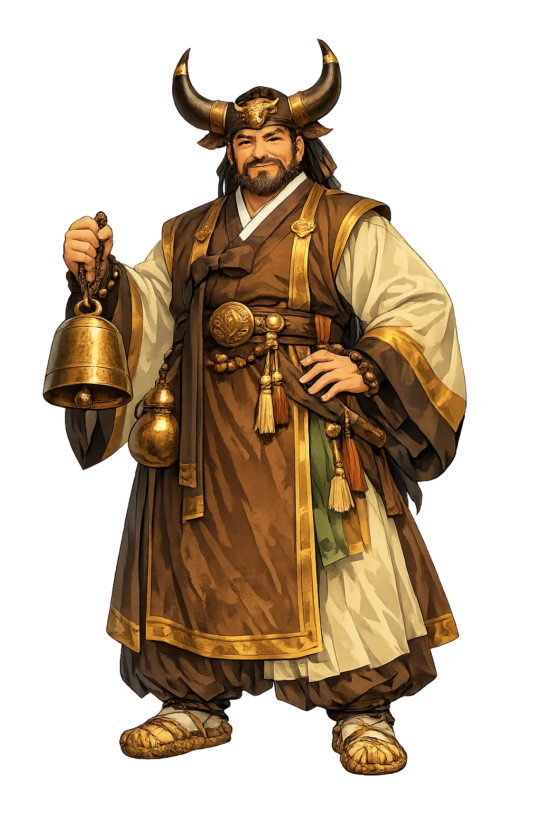
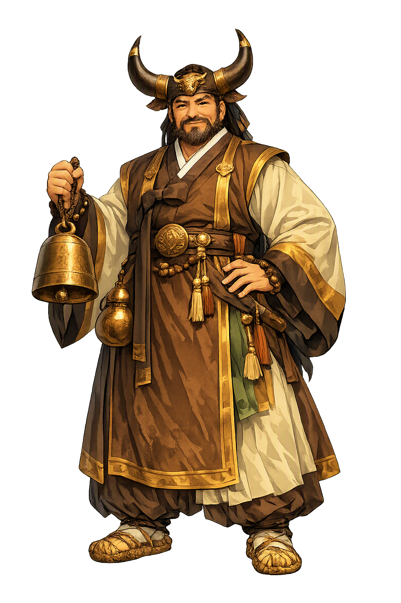

Stories of Sosin
Sosin has no scripture, no temple, and no canonical myth cycle. The figure lives inside the gut — the Korean shamanic rite — in the invocations, divinations, and petitions that ethnographers have recorded from mudang over the past century. The ritual narratives below cluster around the messenger-revealer role; the attestation is thin and regional, and the tradition itself holds that such spirits are known only through the rite.
Korean shamanic cosmology, as the gut manuals and ethnographic records describe, models the spirit world on the old Korean state: a celestial bureaucracy of generals, ministers, and magistrates presided over by figures such as Cheonha Daejanggun, the Generalissimo of All-under-Heaven, with the mountain gods, household gods, and ancestors arranged in ranks below (Lee Jung Young, Korean Shamanistic Rituals; Walraven, Songs of the Shaman). Petitions do not ascend by themselves. The jeollyeong — the messenger spirits, of which Sosin is named as one — are the couriers of this government: they open the road at the rite's beginning, announce the household's business, and carry the answers back down. No classical text tells a story of Sosin the way the Kojiki tells of Ninigi; the evidence is the practice itself, recorded village by village. The figure's meaning is structural: in a cosmos run like a court, revelation is a bureaucratic act, and the messenger is the hinge on which both prayer and diagnosis turn.
Every gut begins by making a way. The shaman sets out the divination flags and the offering table, drums the spirits toward the house, and invokes the road-opening messengers so that the petitions of the living can reach their recipients. Ethnographers of the twentieth century — among them Boudewijn Walraven, working from recorded mudang performances, and Laurel Kendall, working in and around Seoul — describe how the early sequences of a chaesu-gut, the rite to restore fortune, are addressed precisely to these courier spirits. Sosin belongs to this opening phase: the revealer who first names what is wrong. The ritual logic is exact — before the offended god can be appeased, someone must say which god, and the saying itself is the messenger's work. In this way the humblest stratum of the rite, its postal service, is also its epistemology: knowledge of the invisible arrives the way a sealed letter does, handed on from spirit to spirit until a human mouth can open it.
When illness has no visible cause, Korean households have long turned to the mudang. In the rite's divinatory passages the shaman interrogates the spirits on the client's behalf: has a household god been neglected, was a taboo broken at a birth, a death, a move, does an ancestor want something? The messenger-revealer spirit is the one addressed to disclose the answer. Laurel Kendall's ethnography of Seoul-area shamans (Shamans, Housewives, and Other Restless Spirits, 1985) records how the diagnosis is negotiated in performance — the shaman's body the instrument, the spirits' answers arriving through song, movement, and the casting of divination implements. The sources never make Sosin the author of a doctrine; the tradition grants the figure a humbler dignity, as the one who makes hidden causes speakable. The interpretive point is the one Korean shamanism keeps returning to: misfortune is a message, and someone must carry it before it can be answered.
A gut is also a delivery. The household's petitions — for a child's health, for a business, for peace with a dead relative — are composed in the rite, set with offerings on the altar, and then, in the tradition's own idiom, sent up. The messenger spirits carry them from the household's humble gods through the mountain and village powers to the celestial offices, and return bearing the answer: do this, offer that, mend this relationship. Lee Jung Young's classic account (1981) describes the gut as structured along exactly these postal lines, and Walraven's transcriptions of shamanic song show the couriers addressed by name and title. It is tempting to call Sosin a minor figure, since no epic survives; but rites of this kind are performed to this day across the peninsula. The myth, in the end, is the mailbox itself — the faith that what is spoken in the village is heard above.
messenger spirit who discloses hidden causes and conveys prayers
Sosin (소신) is a messenger and revealer spirit of Korean shamanic (musok) cosmology — one of the jeollyeong, the courier spirits who open the road between the human village and the spirit bureaucracy, carry petitions upward, and bring back the diagnosis of what ails a household: which spirit is offended, what taboo was broken, what offering will mend it.
Sosin uncovers the hidden causes of misfortune and illness.
The spirit carries petitions and responses between humans and higher spirits.
Sosin helps the shaman read signs and diagnose spiritual problems.
The figure opens the way for communication during shamanic ritual.
From the original script to the living URL
Sosin
The name survives in scholarly transliteration. Sosin is the standard Korean romanisation, documented in academic sources — “Revealer of things”. Because the spelling uses only Latin letters, the form is the same in both ASCII and Unicode.
No indigenous writing system is securely attested for individual korean names. The form shown is a modern scholarly transliteration.
sosin
The plain sosin form is identical to the Unicode restoration. Because this name is already written in Latin letters, no diacritics, stress, or script information were lost — only capitalization differs.
Sosin
The Unicode restoration does not need to recover lost marks for Sosin. Its value is canonical spelling and consistent cataloguing, not the reconstruction of erased orthography. The domain is readable as-is to both DNS and humanity.
Sosin.com
This restoration is written entirely in ASCII letters — no Punycode encoding stands between Sosin and the DNS. The domain reads identically to machines and to human eyes.
Owned, ideal, and ASCII forms of Sosin
Sosin
The full Unicode restoration. sosin.com is not in the PuniCodex collection — it is watched for release; if it drops, this temple upgrades to an owned flagship.
How Sosin was spoken
How Sosin is preserved in writing
No indigenous writing system is securely attested for individual korean names. The form shown is a modern scholarly transliteration.
Contribute scholarly provenance →Sosin is the patron of an unfashionable idea: that truth needs a courier. The modern world imagines that information travels by itself, weightless and instant; the Korean gut remembers that it never does. Between the village's grief and heaven's answer stands a being whose whole office is the passage — someone who opens the road, states the petition plainly, and brings the reply back in terms a household can act on. Every translator, every advocate, every doctor who reframes a frightening diagnosis is doing Sosin's old work. There is also a quiet lesson in the figure's obscurity: the tradition gave no epic to its messengers because their perfection is invisibility. They are judged, as postal workers are, by whether anything arrives. To restore the capital S is to grant that office a name, and to admit that some of the most consequential figures in any cosmology are the ones who only carry.
Enter Extended Lore